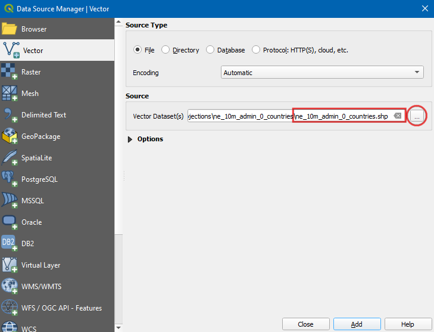
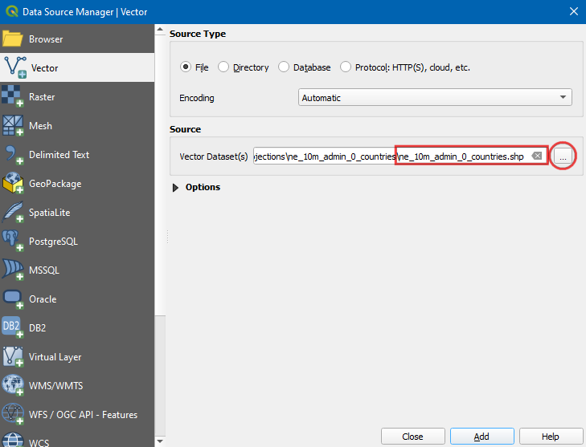

Print Composer Atlas를 활용한 지도 생성 자동화¶
경고
이 튜토리얼은 새로운 버전에서 사용이 가능합니다.
당신이 어느 그룹에서 인쇄 또는 온라인지도를 게시하는 경우 대개 동일한 템플릿으로 여러지도를 만들어야합니다 (보통 각 관리 단위 또는 관심 지역마다 하나씩). 이 맵을 수동으로 작성하는 데 시간이 오래 걸릴 수 있으며 정기적으로 맵을 업데이트하려는 경우 집안일이 될 수 있습니다. QGIS에는``Atlas ‘’라는 도구가있어 맵 템플릿을 만들고 여러 지역에 대해 많은 수의 맵을 쉽게 게시 할 수 있습니다. Print Composer의 기본 사항에 익숙하지 않은 경우 : doc :making_a_map 자습서를 참조하십시오.
작업 개요¶
이 튜토리얼은 하와이 주에서 각 카운티에 대한 습지지도를 작성하는 방법을 보여줍니다.
배워야 할 다른 기술¶
데이터 획득¶
Biologic and Ecologic 범주에서`Wetlands <http://files.hawaii.gov/dbedt/op/gis/data/HI_Wetlands.shp.zip>`_ 레이어를 다운로드하십시오.
Cultural and Demographic 카테고리에서`Census County Boundaries 2010 <http://files.hawaii.gov/dbedt/op/gis/data/county10.shp.zip>`_ 레이어를 다운로드하십시오.
편의를 위해 아래 링크에서 두 데이터 세트의 사본을 직접 다운로드 할 수 있습니다.
Data Source [HAWAII]
과정¶
QGIS를 시작하고 : menuselection :`Layer-> Add Layer-> Add Vector Layer`로 이동합니다.


하와이 전체의 습지를 나타내는 다각형이 표시됩니다. 주의 각 카운티마다 별도의 습지지도를 만들고자하므로 카운티 경계 레이어가 필요합니다. : menuselection :`Layer-> Add Layer-> Add Vector Layer`로 이동하여``county10.shp.zip ‘’파일을 찾습니다. : guilabel :`열기`를 클릭하십시오.
: menuselection :`Project-> New Print Composer로 이동하십시오.

Leave the composer title field empty and click OK.

: menuselection :`Layout-> Add Map`으로 이동하십시오.

지도를 삽입 할 곳에서 마우스 왼쪽 버튼을 누른 상태에서 직사각형을 드래그합니다.

: guilabel :Item Properties 탭에서 아래로 스크롤하여 : guilabel :Controlled by atlas 상자를 확인하십시오. 작곡가는이 항목에 표시되는지도의 범위가``아틀라스 ‘’도구에 의해 결정됨을 나타냅니다.
: guilabel :Atlas generation 탭으로 전환하십시오. : guilabel :`아틀라스 생성`상자를 확인하십시오. : guilabel :`Coverage layer`로``county10 ‘’을 선택하십시오. 이것은``county10 ‘’레이어의 모든 다각형 피처에 대해 각각 1 개의 맵을 만들려고 함을 나타냅니다. 지형지 물 자체가지도에 표시되지 않도록 : guilabel :`숨겨진 적용 범위 계층`을 확인할 수도 있습니다.
Atlas 설정을 구성한 후 맵 이미지가 변경되지 않습니다. : menuselection :`Atlas-> Preview Atlas`로 이동하십시오.
이제지도가 새로 고침되고 개별지도가 어떻게 표시되는지 보여줍니다. 오른쪽 하단의 적용 범위 계층의 현재 기능 번호가 표시됩니다.

각 카운티 다각형에 대해지도가 어떻게 보이는지 미리 볼 수 있습니다. : menuselection :`Atlas-> Next Feature`로 이동하십시오.

Atlas는 커버리지 레이어의 다음 기능 범위까지 맵을 렌더링합니다.
지도에 라벨을 추가하겠습니다. : menuselection :`Layout-> Add Label`으로 이동하십시오.


맵의 레이블은 적용 범위 계층의 속성을 사용할 수 있습니다 .``concat ‘’기능은 여러 텍스트 항목을 단일 텍스트 항목으로 결합하는 데 사용됩니다. 이 경우``county10 ‘’레이어의``NAME10 ‘’속성 값을``County of ‘’텍스트와 결합합니다. 아래와 같은 표현식을 추가하고 : guilabel :`OK`를 클릭하십시오.
concat('County of ', "NAME10")
글꼴 크기를 원하는대로 조정하십시오.

다른 레이블을 추가하고 : guilabel :`주요 속성`아래에``습지 맵 ‘’을 입력하십시오. 여기에는 표현이 없으므로이 텍스트는 모든지도에서 동일하게 유지됩니다.

: menuselection :`Atlas-> Last Feature`로 이동하여 맵 레이블이 의도 한대로 작동하는지 확인하십시오. 습지지도에는 바다에서 뻗어 보이는 다각형이 있습니다. 카운티 경계 외부의 영역이 숨겨 지도록 스타일을 변경할 수 있습니다.
 

: guilabel :Style 탭에서 : guilabel :Inverted polygons 렌더러를 선택하십시오. 이 렌더러는 내부가 아닌 다각형의 외부 스타일을 지정합니다. 채우기 색상으로 흰색을 선택하고 : guilabel :`OK`를 클릭하십시오.
인쇄 작곡가 창으로 전환하십시오. 역 다각형의 효과를 나타내려면 : guilabel :Atlas generation 아래의 : guilabel :Hidden coverage layer 상자를 선택 취소해야합니다. 이제 렌더링 된 이미지가 깨끗하고 적용 범위 다각형 외부의 영역이 보이지 않습니다.

그래도 한 가지 문제가 있습니다. 커버리지 레이어 경계 외부에 있지만 여전히 보이는 맵 영역을 볼 수 있습니다. Atlas는 다른 기능을 자동으로 숨기지 않기 때문입니다. 이는 경우에 따라 유용 할 수 있지만, 목적 상지도가 생성되는 카운티의 습지 만 표시하려고합니다. 이 문제를 해결하려면 메인 QGIS 창으로 돌아가서``county10 ‘’레이어를 마우스 오른쪽 버튼으로 클릭하고 : guilabel :`Properties`를 선택하십시오.

: guilabel :Style 탭에서 : guilabel :Sub renderer`로 : guilabel :`Rule-based 렌더러를 선택하십시오. : guilabel :Rule 아래 영역을 두 번 클릭하십시오.

: guilabel :Filter 옆에있는 : guilabel :`…`단추를 클릭하십시오.

: guilabel :Expression string builder`에서 : guilabel :`Atlas 기능 그룹을 펼치십시오. ``$ atlasfeatureid ‘’기능은 현재 선택된 기능을 반환합니다. 현재 선택된 Atlas 기능 만 선택하는 표현식을 구성합니다. 아래와 같이 표현식을 입력하십시오.
$id = $atlasfeatureid

인쇄 작곡가 창으로 돌아가서 : guilabel :`항목 속성`탭에서 : guilabel :`업데이트 미리보기`버튼을 클릭하여 변경 사항을 봅니다. 이제 카운티 경계를 덮고있는 영역 만 표시됩니다.

이제 현재 날짜를 표시하기 위해 다른 동적 레이블을 추가합니다. : menuselection :`Layout-> Add Label`으로 이동하여지도에서 영역을 선택하십시오. : guilabel :`표현식 삽입 ‘버튼을 클릭하십시오.

: guilabel :Date and Time 기능 그룹을 확장하면``$ now ‘’기능을 찾을 수 있습니다. 현재 시스템 시간이 유지됩니다. ``todate ()``함수는 이것을 날짜 문자열로 변환합니다. 아래와 같이 표현식을 입력하십시오.
concat('Created on: ', todate($now))

데이터 소스를 인용하는 다른 레이블을 추가하십시오. : doc :making_a_map 튜토리얼에 설명 된대로 북쪽 화살표, 스케일 바 등과 같은 다른 맵 요소를 추가 할 수도 있습니다.

맵 레이아웃에 만족하면 : menuselection :`Atlas-> Atlas as Images as 이미지로 이동하십시오.

컴퓨터에서 디렉토리를 선택하고 : guilabel :`Choose`를 클릭하십시오.

Atlas 도구는 이제 적용 범위 계층의 각 기능을 반복하고 생성 한 템플릿을 기반으로 별도의 맵 이미지를 만듭니다. 프로세스가 완료되면 디렉토리에서 이미지를 볼 수 있습니다.

참조 용지도 이미지는 다음과 같습니다.


If you want to give feedback or share your experience with this tutorial, please comment below. (requires GitHub account)